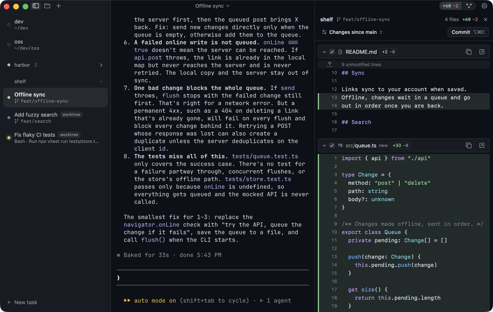
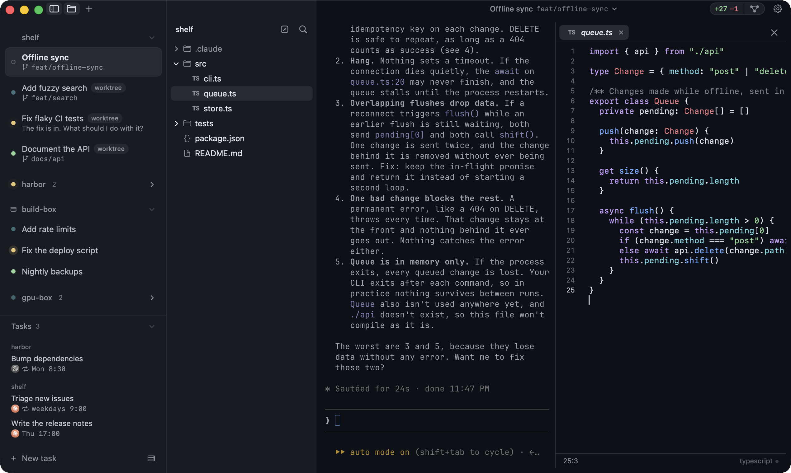

Farol
Run your coding agents side by side. Know which one needs you.
A fast, native macOS terminal for Claude Code, Codex and other AI coding agents, built on libghostty.
$ brew install --cask snowztech/tap/farolFree and open source, MIT. Apple silicon, macOS 14+. Read the docs · What's new





Every changed file as one diff. Leave a note for the agent on any line, or commit, push and open a pull request on GitHub or GitLab.
Eight themes, or your own
Farol's themes, any of Ghostty's, or one you write. Turn on Match system appearance and it follows macOS from light to dark.


See Farol in motion
Questions
What is Farol?
Farol is a free, open source terminal app for macOS made for agentic coding, where AI coding agents write the code and you supervise. Each agent runs in its own session, and Farol shows which one is working, which one is waiting for you and which one is done.
What is an agentic terminal?
A terminal built for AI coding agents as well as for typing commands. Agents like Claude Code and Codex already run in a terminal. An agentic terminal app such as Farol adds what you need to supervise several at once: a session per agent, live status, notifications and a review step before you ship.
How do I run several Claude Code agents in parallel?
Press ⇧⌘N, describe the task and pick an agent. Farol creates a git worktree on a new branch and starts Claude Code or Codex there, so each agent works on its own copy of the repo. Open as many as you like.
Which coding agents does Farol work with?
Claude Code, Codex, OpenCode and Pi report their status once connected in Settings → Agents. Any other agent that runs in a terminal works too, and can report its status through Farol's CLI or the terminal bell.
Is Farol a fork of Ghostty?
No. Farol is its own native Mac app that embeds libghostty, the engine behind Ghostty. You get the same rendering and speed, and Farol reads your Ghostty config and themes.
How do I know when an agent needs me?
The session's dot turns yellow, macOS sends a notification and the Dock icon counts the sessions that are waiting. The menu bar item or the notch panel shows the same from any app.
Can I answer my agents from my phone?
Yes, with Farol Remote. Farol for iPhone lists your sessions, notifies you when one waits, and lets you answer Claude Code or Codex with a tap. It's free, end-to-end encrypted and in beta on TestFlight.
Can I talk to my agents by voice?
You can dictate your prompts with Farol Voice, our free app that runs on your Mac and types into any app, including Farol. Controlling Farol by voice is coming next.
Is Farol free?
Yes. Farol is open source under the MIT license. It needs a Mac with Apple silicon and macOS 14 or later.